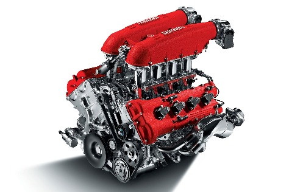
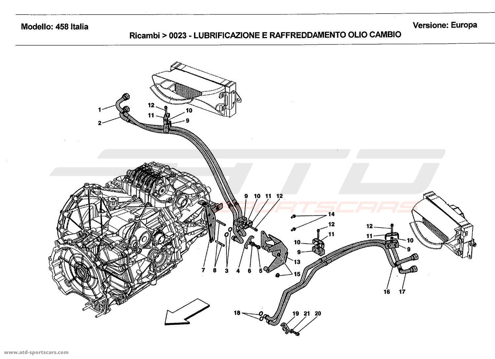
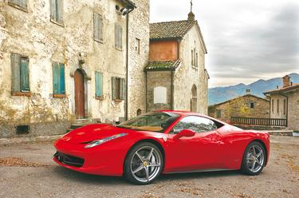
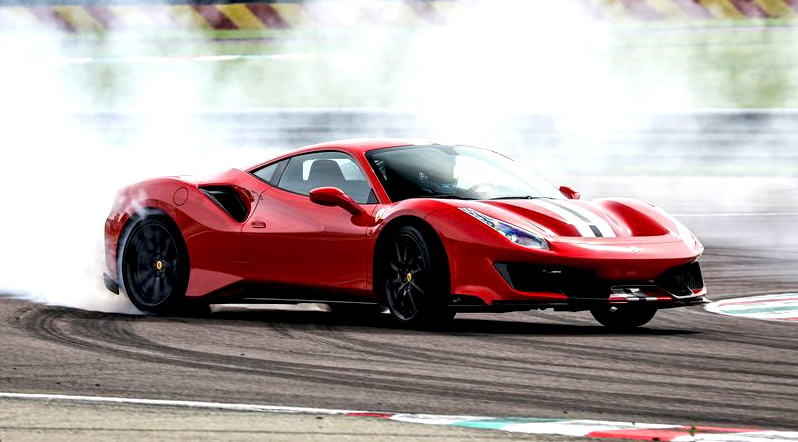

The Ferrari 458 Italia (Type F142) is a mid-engine sports car produced by the Italian automobile
manufacturer Ferrari.
Engine

F136 V8
The 458 is powered by a 4,497 cc (4.5 L; 274.4 cu in) engine of the "Ferrari/Maserati" F136 V8 family, generating
a power output of 570 PS (419 kW; 562 hp) at 9,000 rpm (redline) and 540 N⋅m (398 lb⋅ft) of torque at 6,000
rpm with 80% torque available at 3,250 rpm. The engine features direct fuel injection, which is a first
for Ferrari mid-engine setups in its road cars.
Transmission

Gearbox of 458 italia
The only transmission available on the 458 is a 7-speed dual-clutch automatic gearbox by Getrag, in a different
state of tune shared with the Mercedes-Benz SLS AMG. There is no traditional manual option, making this the
fourth road-car after the Enzo, Challenge Stradale and 430 Scuderia not to be offered with Ferrari's classic
gated manual. It is the first mainstream model to not be offered with a manual transmission.

Ferrari 458 Italia
In keeping with Ferrari tradition, the body was designed by Pininfarina under the leadership of Donato Coco, the
Ferrari design director during 2009.
The interior design of the Ferrari 458 Italia was done by Bertrand Rapatel (Director of Ferrari Interior Design),
a French automobile designer.
The car's exterior styling and features were designed for aerodynamic efficiency, producing downforce of 140 kg
(309 lb) at 200 km/h (120 mph).
Transmission ratios:
Gear
1
2
3
4
5
6
7
Final Drive
Ratio
3.08
2.18
1.63
1.29
1.03
0.84
0.69
5.14
Handling

drifting Ferrari 458 Italia
The car's suspension has double wishbones at the front and a multi-link setup at the rear, coupled with E-Diff
and F1-Trac traction control systems, designed to improve the car's cornering and longitudinal acceleration by
32% when compared with its predecessors.
The brakes include a prefill function whereby the pistons in the calipers move the pads into contact with the
discs on lift off to minimize delay in the brakes being applied.[10] This, combined with the ABS and standard
Carbon Ceramic brakes, have caused a reduction in stopping distance from 100–0 km/h (62-0 mph) to 32.5 metres
(107 ft). Tests have shown the car will stop from 100 km/h (62.1 mph) in 90 feet (27 m) or in 85 feet (26 m)
with run flat tires, 85 feet (26 m) from 60 mph (97 km/h) and 80 feet (24 m) from 60 mph (97 km/h) with run flat
tires.
The adaptive magnetorheological dampers were co-developed with BWI Group.